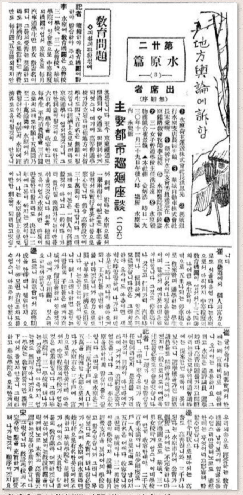
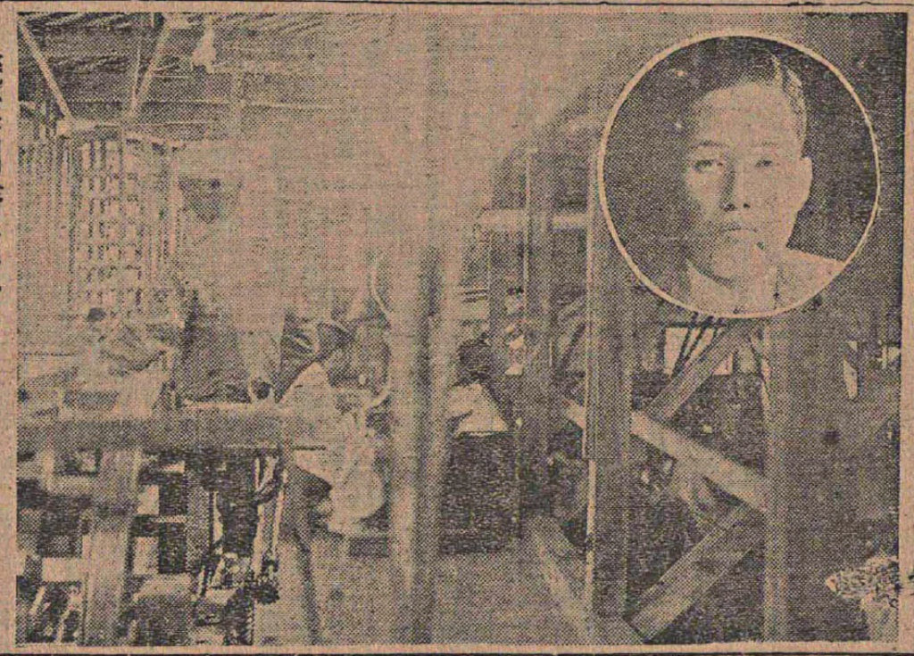
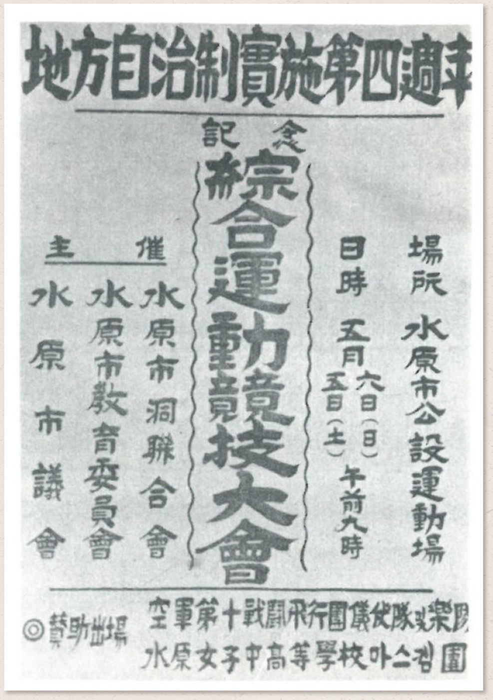
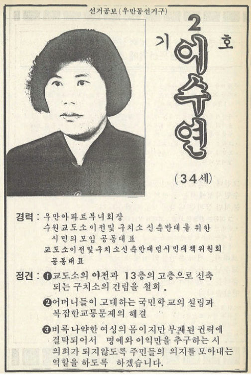
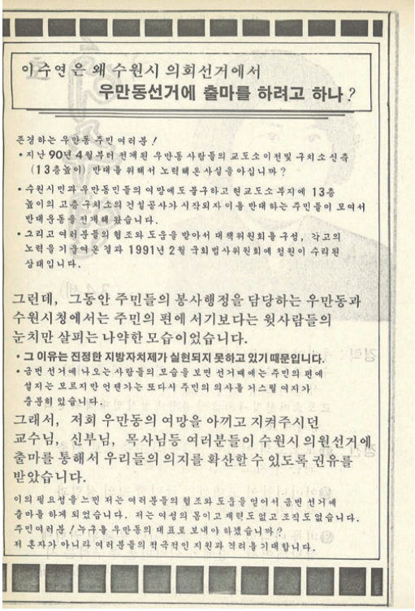

Councils
in their times.시대를 닮은 의원들
“사람은 아버지보다 시대를 닮는다는 아랍 속담처럼황병주 · 수원시의원들의 사회적 배경
수원의 시의원들도 시대를 닮는다.”
누가 지역을 대표해 왔는가. 식민지의 면협의회에서 오늘의 수원시의회까지, 의원들의 직업과 나이, 출신과 학력은 그 시대가 어떤 사람에게 공적 발언권을 주었는지를 말해 준다. 이 전시는 사진·신문·선거자료와 통계를 통해 수원 지방의회 구성원의 변화를 네 개의 장으로 따라간다.
자산가의 자치Town Council under Colonial Rule
면협의회 · 읍회
3·1운동 이후 ‘문화정치’를 내건 총독부는 1920년 지방자치제를 시행했다. 1917년 지정면이 된 수원면에도 면협의회가 설치되었지만, 그것은 자문기구에 불과했다.
선거권은 일정액 이상의 세금을 낸 사람에게만 주어졌다. 1923년 선거에서는 조선인 7인과 일본인 5인이 당선되었다. 한성은행 지배인 출신 자본가, 대한의원 출신 의사, 3대 지주 가문의 인물들이 그 자리를 채웠다.

홍사선
20세에 의원이 된 청년 사업가. 4~5년 사이 네 개의 회사를 세웠고, 해산한 회사의 미수금을 삼일학교에 기증했다.
VIEW RECORD → 1923 · 면협의원한상봉
대한제국 무관에서 금융인으로. 한성은행 수원지점 지배인, 수원전기 대주주를 거쳐 중추원 참의가 되었다.
VIEW RECORD → 1923 · 면협의원이한승
수원의 일류 재산가. 수재 의연금 모금을 비난하고 1원을 기부해 언론의 비판을 받았다.
VIEW RECORD →| 성명 | 연령 | 직업 및 소속 | 비고 |
|---|---|---|---|
| 홍길선 | 36 | 회사 중역 | 제헌의원 |
| 최재엽 | 45 | 회사 중역 | 읍의원 최다선 |
| 양규룡 | 44 | 회사 중역 | 수원 상의 부회장 |
| 한광호 | 44 | 농업 | |
| 윤태중 | 55 | 회사원 | |
| 이○ | 49 | 회사 중역 | |
| 이승화 | 35 | 회사 중역 | |
| 김학배 | 32 | 상업 | 수원 상의 부회장 |
출처 : 수원시의회, 2002, 『수원시의회사』, 182쪽.
지역 유지의 ‘체면’
자산가층 의원들은 식민 당국과 가까워야 했지만, 동시에 학교를 세우고 구호에 나서라는 지역사회의 압력에도 응해야 했다. 면협의회와 읍회는 이들이 사회적 위신을 유지하고 근대적 공공성을 떠맡는 무대였다.

전쟁 속의 첫 시의회The Postwar Council
동장, 세무 공무원, 청년단
1949년 지방자치법이 공포되었지만 선거는 전쟁이 소강상태에 접어든 1952년에야 치러졌다. 좌파 세력이 사회적 무대에서 사라진 뒤, 수원의 공적 영역은 말단 행정 경력과 우익 정치활동을 가진 인물들이 채웠다.
초대 의원 최학배는 세무서 출신으로 자유당 부지부장을 지냈고, 그의 장남 최종건은 제2대 시의원이 되었다. 선경직물, 훗날의 SK다.

직업을 ‘농업’으로 기재한 제1대 의원
40대 의원 — 근대 공교육 1세대
수원 출신 의원
고등교육 이수자
지방자치 4주년
1956년 제2대 선거에서는 무려 10명이 공공기관 경력을 가지고 있었다. 1960년 4·19 이후 단체장 직선제가 부활했지만, 이듬해 5·16 군사쿠데타로 지방자치는 전면 중단되었다.

30년 만의 시의회The Revival
수원의 전국화
10만 명이 안 되던 인구는 60만 명을 넘었다. 산업화와 이촌향도로 충청·영남·호남에서 이주민이 몰려들었고, 지역정치는 더 이상 수원 토박이의 것만이 아니게 되었다.
처음에는 기초의원의 정당 추천이 금지되었고, 2010년부터 정당 공천제가 시행되었다. 2003년까지 시의원은 무보수 명예직이었다.

지역 유지형
사업으로 부를 쌓은 뒤 라이온스클럽, 동정자문위원, 체육단체 등으로 활동 폭을 넓혀 시의원이 되는 경로. 1990년대 시의원의 전형이었다.
조명환 · 정기운
관변단체 · 정치활동
재건국민운동, 새마을운동, 정당 지구당 활동을 통해 정치에 입문. 관변단체 출신은 대체로 여당, 일부는 야당 활동으로 경력을 쌓았다.
이종구 · 박우양 · 박태부
시민 · 사회운동
전교조, 경실련, 아파트 주민운동, 노동조합 출신. 의정활동은 ‘봉사’가 아니라 자신이 해 온 운동의 연장이었다.
임승태 · 김명호 · 김현철

1952년 고등교육 이수 의원
1991년 제4대 고등교육 이수 의원
2010년 제9대 고등교육 이수 의원
20~30대 의원 비중의 지속적 감소
새로운 얼굴들Women in the Council
“양가의 예쁜 딸로 태어났다”
1960년 제3대 의회까지 여성 의원은 한 명도 없었다. 1991년 우만아파트 부녀회장 이수연이 수원시의회 첫 여성 의원이 되었다.
2002년 『수원시의회사』는 그를 ‘예쁜 딸’과 ‘우등생’으로 소개한다. 정치에 나선 여성에게 남다른 무언가를 요구하던 시선이다. 초기 여성 의원들은 새마을부녀회처럼 기존 질서를 타고 진출하는 경우가 많았다.


FROM ONE TO FOURTEEN대수별 수원시의회 여성 의원 수
본문에 수치가 제시된 대수만 표시. 제11대는 전체 37명 중 14명(37.8%). 출처: 황병주·유상희, 「수원시의원들의 사회적 배경」.
할당제와 공천제
여성 의원의 확대에는 2000년대의 여성 할당 공천제가 크게 작용했다. 2000년대 후반부터는 민중운동과 시민운동을 거쳐 시의회에 진출한 여성 의원들도 나타났다.
수원 출신의 성공한 중장년 남성 중심이던 시의회가, 수원 출신이 아닌 여성들까지 품게 된 것이다.

“가장 낮은 곳에 위치했던 여성들이 가장 높은 정치무대로 비상할 수 있다면 그만큼 수원 지역정치의 미래는 밝을 것이다.”황병주 · 수원시의원들의 사회적 배경
CURATION
원문 · 황병주(국사편찬위원회 편사연구관), 유상희(서울대학교 석사)『수원시의원으로 살다』 Ⅱ, pp.120–153